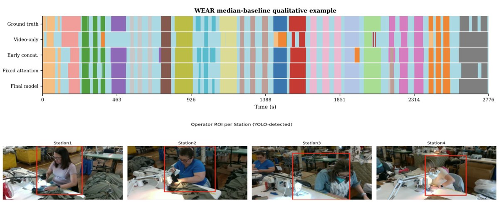

TGIF: Multimodal Temporal Segmentation
Summer – Sep 2026Summer Research, CEE, Carnegie Mellon University · Advisor: Prof. Pingbo Tang
Multimodal (video + vibration) temporal action segmentation, where Dynamic Window Attention adapts the sensor window to the predicted action segment instead of a fixed length, sharpening attention-based fusion and improving segmentation accuracy.
- Dual-ROI VideoMAE features with MS-TCN segmentation raised activity recognition from about 80% to 91.9% validation accuracy.
- DWA fusion reached 92.5% mean accuracy (93.7% best seed) and lifted the Edit score from 89.7% to 91.4%.
- On WEAR, concatenated Macro-F1 improved from 75.73% to 81.09% over video-only, early-concatenation, and fixed-window baselines.
 University of California, Los Angeles
University of California, Los Angeles BYD, Automotive Engineering Research Institute
BYD, Automotive Engineering Research Institute